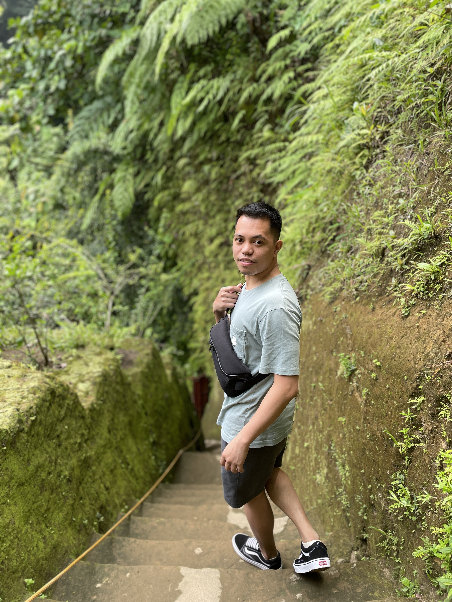
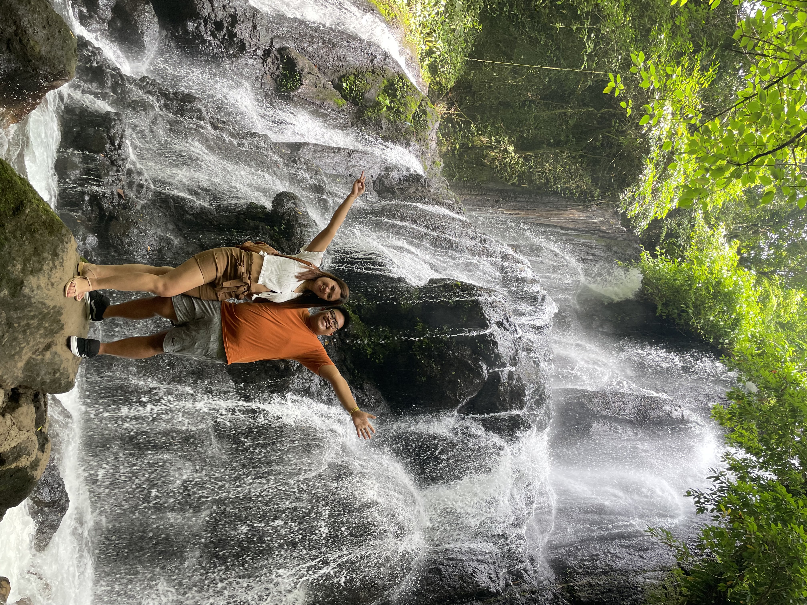
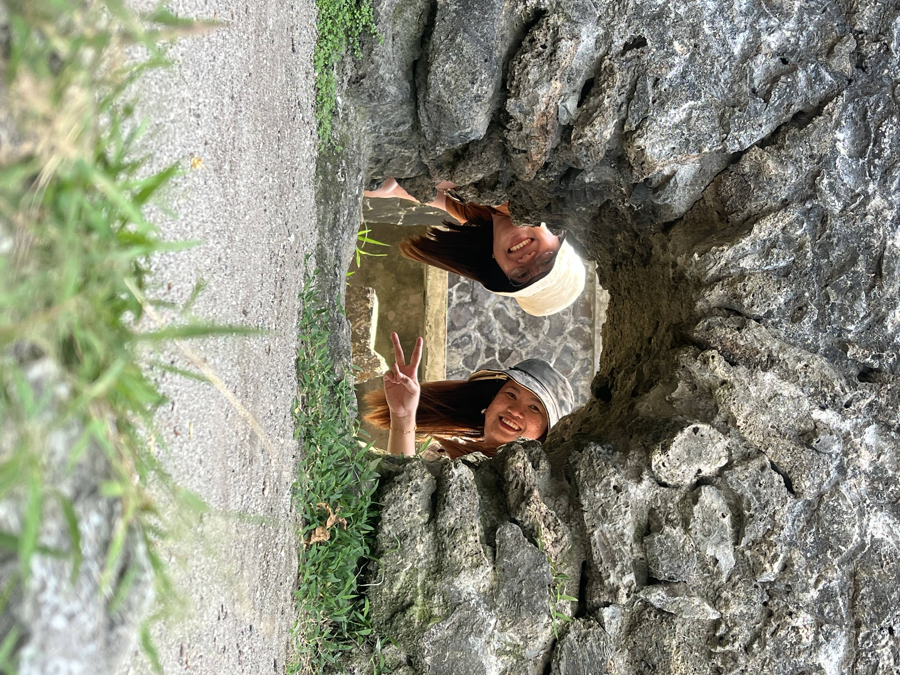
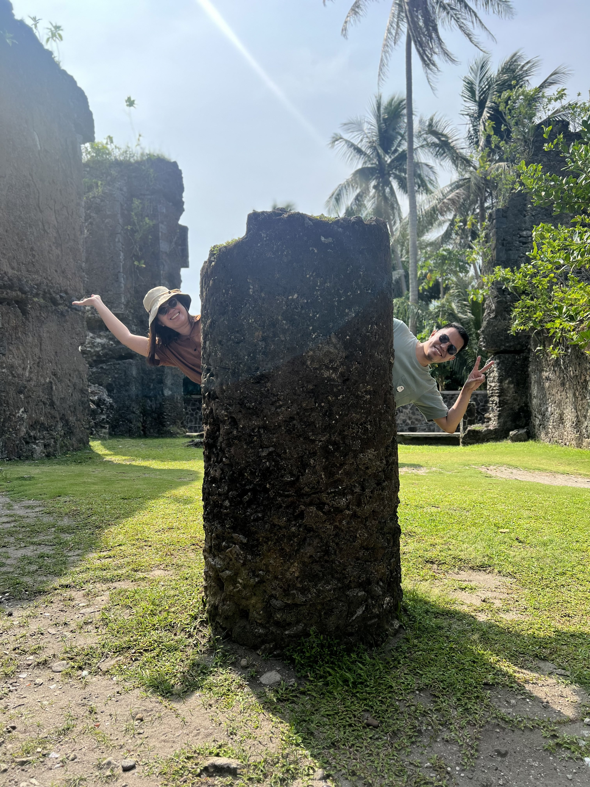
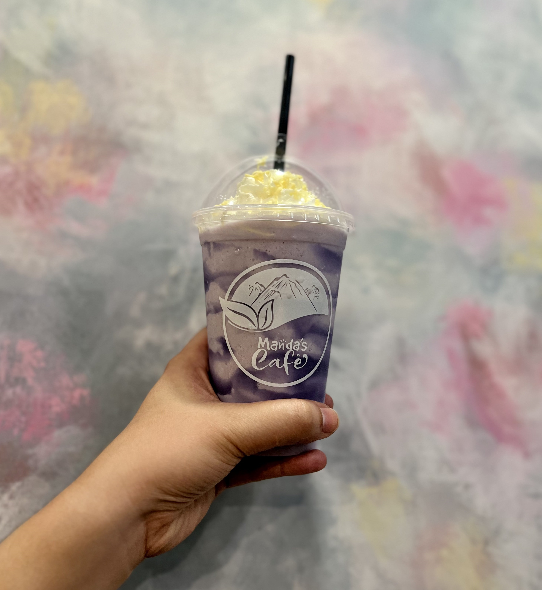
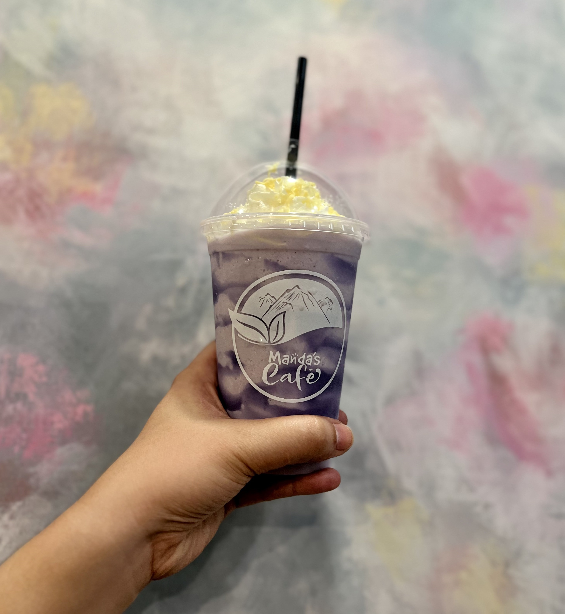

Falls In Love with Bulusan's Hidden Beauty
June 9 - 10, 2023Thankfully we still managed to wake up early despite our late night talk sitting along the shorelines and watching the stars while listening to Taylor Swift songs we overhear from another group's bluetooth speaker on mild volume.
For our second day in the region, we traversed the edge of Sorsogon province from Matnog to Bulusan, Barcelona and Gubat. We began this day of adventure by going to Zoe's Resort and Eco-Adventure Park, a place highly-suggested by our driver / tour guide. There, we got to see what locals call the Hidden Falls and man, I wish I brought some extra clothes because the water there looked so refreshing especially during that hot afternoon.
The way to get there is through this series of steps surrounded by green moss which enhances the mood while preparing you for the hidden beauty down below. Yes, you read it right. It's a downward path so prepare your legs for the climb back up. I'm telling you, you're gonna want to go back down and soak in that cold running water once you make it to the top. Unfortunately for us, a glass of mango shake from the park's own eatery will have to do because we still had a long day ahead and lots of places to visit.
Next stop was Bulusan Volcano Natural Park. It was hardly a 10-minute drive away from Zoe's which was a good thing since we were all starving after that climb. So we had our lunch right there. It was only Day 2 of our vacation but all four of us were already convinced that contrary to popular belief, the food there in Bicol is not all spicy. In fact, the meals we've had so far are much more delicious and enjoyable, not to mention twice as cheap as the food here in Manila.

After recharging with a flavorful sinigang and afritada (which by the way, had pork for meat, not chicken) we went up to Bulusan Lake riding the park's cool tiny coaster bus with open sides. We took a short boat tour around the lake before taking pictures and videos in the famous bridge where Heart Evangelista is said to have filmed one scene of her romance serye "I Left My Heart in Sorsogon" during the pandemic lockdown.

Our itinerary then took us all the way to Barcelona where the ruins of the Presidencia Building, a Spanish Colonial-era structure, lies. Being a group who's tired of the usual boring shots, we've had so much fun experimenting on different angles for video and photo there. So much so that other people started imitating us. We even climbed stone posts and framed our faces in the holes of the structure.
 We ended that day with a delicious dinner at Manda's Cafe in Gubat — another good recommendation from a friend. The place was small yet cozy. And was the food any good? I can't believe you still need to ask. It's Bicol, baby.
 
